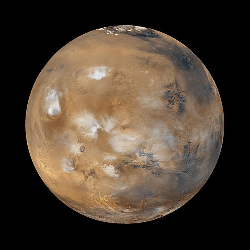

Mars is the second planet in the solar system.

Mars
Mars is the fourth planet from the Sun and the second smallest planet in the Solar System, after Mercury. Named after the Roman god of war, it is often described as the "Red Planet" because the iron oxide prevalent on its surface gives it a reddish appearance. Mars is a terrestrial planet with a thin atmosphere, having surface features reminiscent both of the impact craters of the Moon and the volcanoes, valleys, deserts, and polar ice caps of Earth.
Orbital Characteristics
- Aphelion
- 108 939 000 km
- Perihelion
- 107 477 000 km
- Orbital period
- 224.701 d
- Average orbital speed
- 35.02 km/s
Physical Characteristics
- Mean radius
- 6051.8±1.0 km
- Mass
- 4.8676×1024 kg
- Surface gravity
- 8.87 m/s2
- Axial tilt
- 177.36°